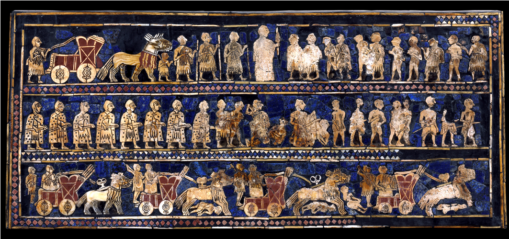
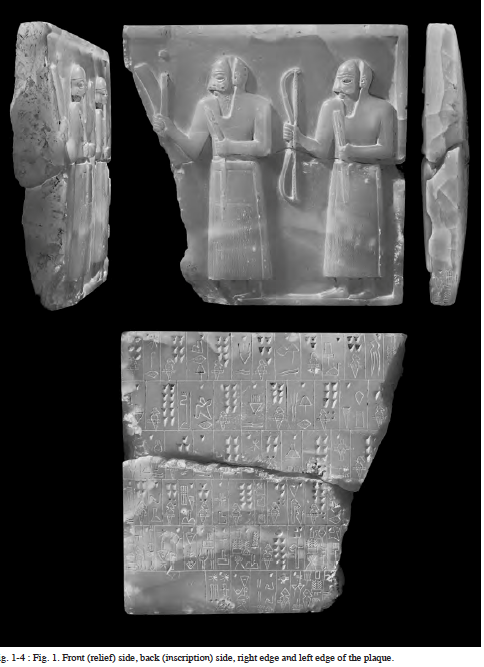
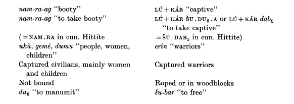
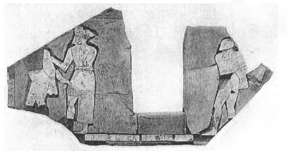
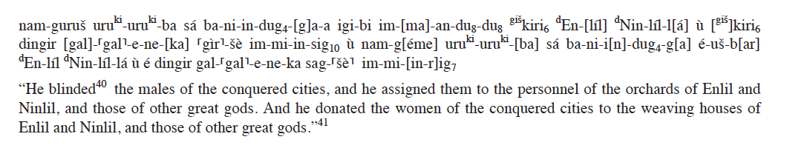
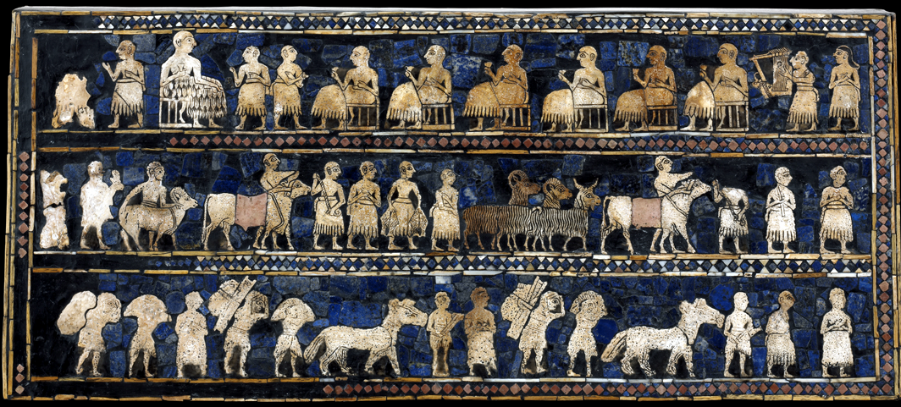
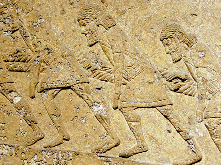

Introduction
Ancient Mesopotamian history includes the formation of numerous states and empires, as well as the collapse and subsequent take-over of states by war. A successful military invasion of one state over another results in significant casualties, as well as the accumulation of prisoners of war, individuals taken captive as a result of conflict (Gelb 1973). This blog will examine the portrayal of such prisoners of war in Ancient Mesopotamia, and aims to establish potential influences of their eventual fate.
The Standard of Ur in War:

The “Standard of Ur” depicts life in early Mesopotamia, and the mosaics on this side demonstrate the defeat of an enemy. Notice that the second register shows armed soldiers on the left, and soldiers leading captives away on the right. The top register shows the ruler with soldiers parading nude and bound prisoners in front of him.
Prisoners of War in Early Texts
Firstly, it is important to note that information regarding prisoners of war is somewhat obscured by the discrepancies between royal historical sources, which generally exaggerate information and aren’t always completely reliable, and administrative texts, which give straightforward accounts of facts (Gelb 1973). Such is the case with the great variability among numbers of prisoners of war in texts, from several thousands in the royal inscriptions of Rimus, to single occurrences in the administrative texts of the Ur III period (Gelb 1973).

The front, back (inscription side) and left edge of the Prisoner plaque of Kiš
The oldest historical inscription from Mesopotamia on record is in fact a document that records over 28,970 prisoners of war captured over time by the state of Kiš. This plaque is dated back to the early dynastic period (2900-2750 BC) and includes images of warriors leading captive prisoners of war. The inscription records twenty-five conquered cities along with the number of captured prisoners, and names of orchards where certain prisoners were assigned to work (Steinkeller 2013).
The greatest number of prisoners of war in texts comes from regions in the mountains and lowlands east of the Tigris, such as those captured from Sahara by Rîmuš, and those captured by Šu-Sin from Šimanum (Gelb 1973). What is common throughout all these texts, however, is that prisoners of war are generally from states that are ethno-linguistically different from the state of the captors; the majority of prisoners of war in early Mesopotamia bear non-Mesopotamian names (Gelb 1973). More specifically, the texts outline different destinies of prisoners: death, slavery, or freedom and integration into society (Gelb 1973).
Examples of distinctive language used to recognize prisoners of war slaves in early Mesopotamia sources:

Misfortune: Slavery and Death
Prisoner of war slaves have been documented since the earliest recorded history in Mesopotamia. Although forms of slavery were observed in many states, the only form of outright slavery was that from foreign slaves, mainly prisoners of war (Steinkeller 2015). Immediately after capture, prisoners of war belonged to the state and remained under the permanent control of the state (Gelb 1973). The second generation of foreign slaves were unfortunately also deemed to be slaves (Mu-chou Poo 2012). These slaves did not posses any legal or social rights, and were abused and exploited to the extreme under state control (Steinkeller 2015; Gelb 1973).
The experience of war slaves was significantly different between genders. Texts from Ur III indicate that foreign slaves were generally women, known as géme (Steinkeller 2015). Géme and their children would be distributed in state run economic institutions, primarily temples, and would work as weavers and grain processers (Steinkeller 2015). These women would also occasionally maintain irrigation systems, assist with the harvest, or be sold or given as gifts to other royals (Steinkeller 2015; Gelb 1973). Living conditions for these women and children were poor; they would often be given inadequate rations of barley, and would often die from sickness or starvation (Gelb 1973).

A Slate frieze from Palace A at Kiš depicting warriors leading captive prisoners of war.
Males experienced an alternative, more unfortunate fate. Male prisoners of war were seldom turned into outright slaves; they were typically slaughtered or blinded and then put to work on specialized tasks, such as working in orchards, drawing water from wells, or functioning as singers/musicians and millers (Steinkeller 2015; Gelb 1973; Mu-chou Poo 2012). Alternatively, male prisoners of war might be roped or put into woodblocks to inhibit their mobility (Gelb 1973).
The gender difference between male and female prisoners of war is outlined in a royal inscription of Su-Sin, an Ur III king, which describes the usage of prisoners of war from the captured Šimaški:

Freedom: Settlement and Integration into Society
Unlike slave prisoners of war, other prisoners of war in early Mesopotamia experienced a significantly different fate. These individuals were relocated into Mesopotamia and permitted the status of state independents (Steinkeller 2015; Mu-chou Poo 2012). They settled on land, provided with field allotments, and assimilated into the local rural population and royal economy (Steinkeller 2015). The earliest recorded information on settlement of captured foreigners is outlined in royal texts, in which Su-Sin, of Ur III, wrote of defeating the people of Simanum and subsequently settling the captives in the surrounding districts near the city of Nippur (Gelb 1973).
The practice of settling foreign populations increases in later times, until it reaches its peak in the New Assyrian period (Gelb 1973). Additionally, prisoners of war may have also been placed in the service of temples, employed as the king’s bodyguards, mercenaries or in the labor force (Mu-chou Poo 2012). The status of these individuals, similar to those who were settled on land, was not that of the prisoner of war slaves. These individuals were assimilated into Mesopotamian life and culture and the social positions and treatment they received was not unlike the rest of society (Mu-chou Poo 2012).
The Standard of Ur in Peace:

The two lower registers illustrate the importance of the rural economy. The bottom register shows men carrying produce in bags on their shoulders and others leading onagers by ropes. The second register shows men leading bulls and carrying fish.
Determinants of Fate
The question remains: what determines the fate of these prisoners of war? Why must some prisoners of war endure a life of misfortune in slavery, while others are granted legal status, freedom and integrated into the state economy? The answer to this question appears to lie in the development and trajectory of the state itself. In order to utilize masses of slaves effectively, a state must be able to exert control over these individuals, have surplus production to provide for them, and have an appropriate level of economy (Gelb 1973).
Low agricultural economies with insufficient surplus production and low-level state organization did not possess the means to effectively incorporate prisoners of war into their economy through slavery. Prisoner of war slaves would therefore be poor investments as they would have little economic value, and male prisoners would be difficult to control (Steinkeller 2013; Gelb 1973). Thus, males would commonly be killed or sacrificed to the gods in the temple, but females and children prisoners would be put to work as slaves (Gelb 1973; Snell 2001). Administrative texts from the reign of Nur-Sin, the third king of Ur III (2052-2043 B.C.), offer information on strictly the female and child prisoners of war; there is hardly any information on male prisoners of war in early ancient Mesopotamia. This substantiates the hypothesis that male slaves were not used until later state and economic development (Gelb 1973).

With the growing power of state organization, however, male prisoners of war were later taken captive due to the state’s ability to exert greater control (Gelb 1973). Males were often marked or branded, tied with ropes or kept in neck stocks immediately after capture in order to inhibit their mobility (Gelb 1973; Mu-chou Poo 2012). They could then be forced to work as musicians, or in orchards, as is commonly found in ancient texts.
Though there are very few texts mentioning male prisoners of war and the integration and settlement of these prisoners, the texts available are from periods of further state organization and economic development. This is underscored by the evidence of prisoner of war slaves performing agricultural work in Su-Sin’s reign in 2037 B.C., after he conquered Šimanum, and the fact that settling foreign populations continued to grow over time (Steinkeller 2013; Gelb 1973). If the state also has a sufficient economy to utilize such prisoners of war, it would be in the state’s best interest to then settle and integrate such prisoners into society, allowing for a very productive form of labor.
Therefore, although there is limited information available, it appears that the fates of prisoners of war are dependent on a state’s organization and its economy. So long as a state was able to exert control over male prisoners, and had a developed agricultural and surplus economy, it would be able to effectively utilize prisoners of war by integrating them into both the society and the economy after settling them on land (Gelb 1973). However, a more primitive form of statehood and economy would not possess the means to effectively exploit prisoners in this way, and thus would exploit females and slaves, and would either kill or handicap males to use for their benefit.
Works Cited
Primary Sources:
"Archaic Prisoner Plaque From Kiš. ~2750-2600 BC. Private Owner.
Frayne, RIME 3/2, 301–06 Šu-Sin 3 iv 15–31.
The Standard of Ur. 2600 BC. British Museum, London.
Barjamovic, Gojko. “Ancient Bodies: Understanding Economies.” Harvard University. Science Center E, Cambridge, MA. 16 March 2015. Lecture Slide Page 25.
Secondary Sources:
Enemies of Civilization: Attitudes toward Foreigners in Ancient Mesopotamia, Egypt, and China. Mu-chou Poo, Mu-chou Poo Muzhou Pu. SUNY Press, Feb 1, 2012. Page 103-108.
Gelb, J. (1973). Prisoners of War in Early Mesopotamia. The Journal of Near Eastern Studies. Vol. 32, No. ½. University of Chicago Press.
Steinkeller, P & Hudson, M. (2015). Labor in the Early States: An Early Mesopotamian Perspective. Labor in the ancient world. The International Scholars Conference on Ancient Near Eastern Economies. Vol. 5. Dresden: ISLET.
Snell, Daniel C. (2001). Flight and freedom in the ancient Near East. Culture and History or the ancient Ncar East; Vol. 8.
Steinkeller P. (2013). An archaic "prisoner plaque" from ki?. Revue d'assyriologie et d'archéologie orientale, 2013/1 Vol. 107, p. 131-157. DOI : 10.3917/assy.107.0131